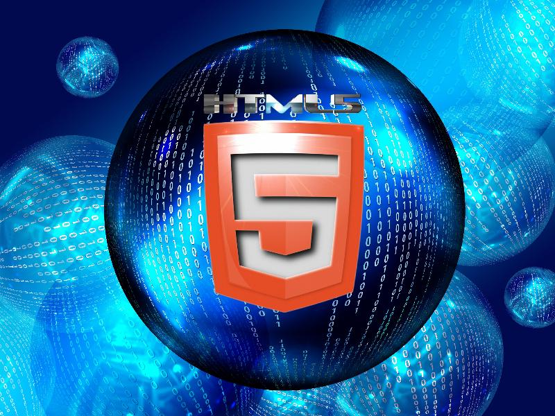
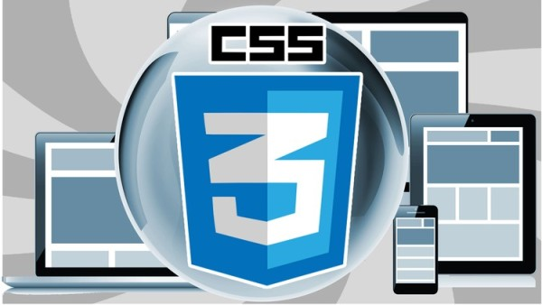
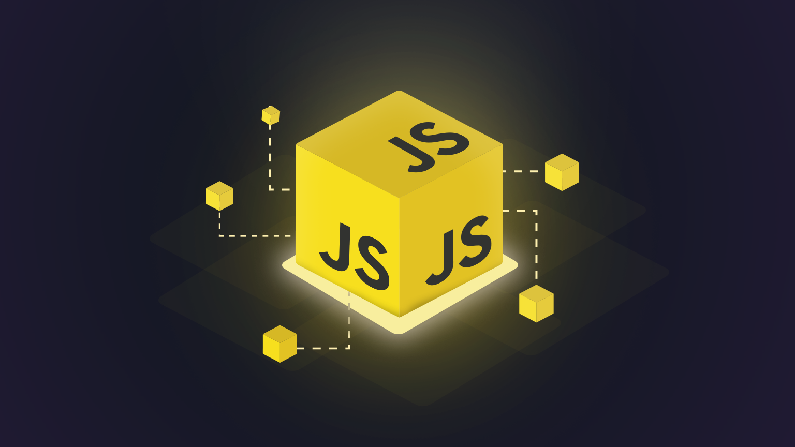

// 01 · Desarrollo Web
Lenguajes para la Web
HTML5
HyperText Markup Language
HTML (HyperText Markup Language) es el esqueleto de la web. Define la estructura y el significado semántico de cada elemento en una página: títulos, párrafos, imágenes, formularios, tablas y más. No es un lenguaje de programación — es un lenguaje de marcado que los navegadores interpretan para renderizar contenido visible. Creado por Tim Berners-Lee en 1991, hoy se encuentra en su versión HTML5, que incorpora soporte nativo para audio, video, canvas 2D/3D y APIs de geolocalización, almacenamiento local y notificaciones push.

El Lenguaje Base de la Web
HTML estructura todo lo que ves en un navegador. Cada sitio web del mundo — desde Google hasta Wikipedia — está construido sobre etiquetas HTML. Es el primer lenguaje que todo desarrollador web aprende y el punto de partida de cualquier proyecto digital.
CSS3
Cascading Style Sheets
CSS (Cascading Style Sheets) es el lenguaje de estilo visual de la web. Controla colores, tipografías, espaciado, animaciones y layout de todos los elementos HTML. El término "cascading" describe cómo los estilos se heredan y sobreescriben en orden de especificidad. Con CSS3, la web ganó capacidades de animación, transformaciones 3D, variables nativas (Custom Properties), Grid Layout y Flexbox — herramientas que permiten crear interfaces complejas y completamente responsivas sin necesidad de JavaScript para el estilo visual.

El Estilo Visual de la Web
Sin CSS, la web sería texto plano sin color ni forma. CSS transforma estructuras HTML crudas en interfaces visuales atractivas. Las animaciones, las transiciones suaves y los diseños responsivos que ves en cualquier sitio moderno son posibles gracias a CSS3 y sus capacidades de diseño avanzado.
JavaScript
Lenguaje de scripting web
JavaScript (JS) es el único lenguaje de programación que los navegadores ejecutan de forma nativa. Agrega interactividad, lógica y dinamismo a las páginas web: validación de formularios, animaciones complejas, peticiones a APIs, manejo del DOM y mucho más. Creado en 1995 por Brendan Eich en solo 10 días, hoy es el lenguaje más usado del mundo (según Stack Overflow, por 12 años consecutivos). Con Node.js puede usarse también en el servidor, convirtiendo a JS en el único lenguaje full-stack. Frameworks como React, Vue y Angular lo han elevado a la columna vertebral de la web moderna.

El Lenguaje más Usado del Mundo
JavaScript está en absolutamente todo: el botón que reacciona al clic, el mapa interactivo, el chat en tiempo real, la app móvil de tu banco. Con la llegada de Node.js en 2009, salió del navegador y conquistó el servidor. Hoy un solo desarrollador puede construir aplicaciones completas usando únicamente JavaScript.
Python
Backend & Ciencia de Datos
Python es el lenguaje más versátil del ecosistema digital moderno. En desarrollo web se usa principalmente en el backend con frameworks como Django (completo) o Flask (minimalista). Su sintaxis limpia y legible lo hace ideal para principiantes y expertos por igual. Más allá de la web, Python domina la Inteligencia Artificial, el Machine Learning y la ciencia de datos con librerías como TensorFlow, PyTorch, Pandas y NumPy. Es el lenguaje predilecto de investigadores, data scientists y desarrolladores de IA en todo el mundo.

El Lenguaje de la Inteligencia Artificial
Python no solo construye sitios web — construye el futuro. ChatGPT, Gemini, los modelos de visión por computadora y los sistemas de recomendación de Netflix y Spotify están escritos en Python. Su sintaxis limpia y su ecosistema de librerías lo hacen indispensable en la era de la IA.
// Desktop Apps
Lenguajes para Escritorio
Java
Aplicaciones de escritorio & Android
Java es uno de los lenguajes más establecidos de la industria, creado por Sun Microsystems en 1995 bajo el lema "Write Once, Run Anywhere". Su máquina virtual (JVM) permite que el mismo código corra en Windows, macOS y Linux sin modificaciones. Es el lenguaje principal para aplicaciones empresariales de gran escala, fue el lenguaje oficial de Android durante años, y se usa ampliamente en sistemas bancarios, plataformas de e-commerce y aplicaciones de escritorio con frameworks como JavaFX y Swing.
El Gigante Empresarial
Desde los sistemas de los bancos hasta las apps de Android, Java ha estado presente en la infraestructura digital del planeta por casi 30 años. Su modelo de programación orientada a objetos enseña fundamentos de ingeniería de software que aplican en cualquier lenguaje.
C#
Aplicaciones .NET, Videojuegos (Unity)
C# (C Sharp), creado por Microsoft en 2000, es un lenguaje multiparadigma del ecosistema .NET. Es la opción principal para desarrollar aplicaciones de escritorio en Windows (WPF, WinForms), aplicaciones empresariales con ASP.NET, y es el lenguaje oficial del motor de videojuegos Unity — usado en miles de juegos para PC, consolas y móviles. Su sintaxis es similar a Java pero incorpora características más modernas como LINQ, propiedades automáticas, records y nullable reference types.

El Lenguaje de Windows y los Videojuegos
C# es la opción más robusta para desarrollar en el ecosistema Microsoft. Pero su mayor protagonismo en la cultura digital actual viene de Unity: prácticamente la mitad de los videojuegos del mundo — desde indie hasta AAA — están escritos en C# con Unity.
// UI/UX & Layout
Diseño y Maquetación
Figma
Diseño UI/UX · Prototipado
Figma es la herramienta de diseño de interfaces más usada del mundo. Basada en la web, permite diseñar, prototipar y colaborar en tiempo real con todo el equipo. No es un lenguaje de programación en el sentido estricto, pero su sistema de componentes, variables de diseño y auto-layout son tan lógicos y estructurados que muchos lo consideran programación visual. Figma es el puente entre el diseño y el desarrollo: genera código CSS automáticamente, exporta assets y permite a los desarrolladores inspeccionar cada propiedad de diseño directamente desde el navegador.
El Estándar de la Industria del Diseño Digital
Toda app que usas — desde Instagram hasta tu aplicación bancaria — fue diseñada en algún momento en Figma (o su predecesor Sketch). Es la herramienta donde los diseñadores dan forma visual a las ideas antes de que los desarrolladores las conviertan en código real. Su modo colaborativo cambió para siempre el flujo de trabajo de los equipos digitales.
Sass / Tailwind
Preprocesadores y Frameworks CSS
Sass es un preprocesador CSS que añade superpoderes al CSS estándar: variables, anidamiento, mixins, funciones y herencia. El código Sass se compila a CSS puro. Tailwind CSS, por otro lado, es un framework de utility-first: en lugar de escribir CSS personalizado, aplicas clases predefinidas directamente en el HTML. Ambos enfoques buscan el mismo objetivo — hacer el CSS más mantenible, escalable y eficiente — pero con filosofías opuestas. Tailwind domina en proyectos modernos con React y Next.js, mientras Sass sigue siendo relevante en proyectos con metodologías BEM o ITCSS.

CSS con Superpoderes
Sass y Tailwind representan dos filosofías distintas para resolver el mismo problema: CSS a gran escala se vuelve caótico. Sass lo organiza con programación; Tailwind lo elimina casi por completo con utilidades atómicas. Ambos son esenciales en el toolkit de cualquier desarrollador web moderno.